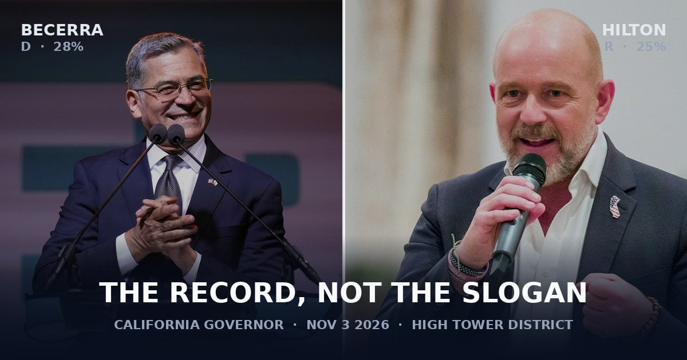
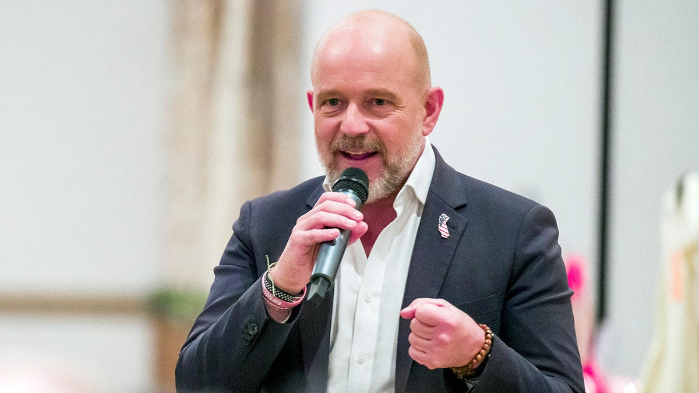
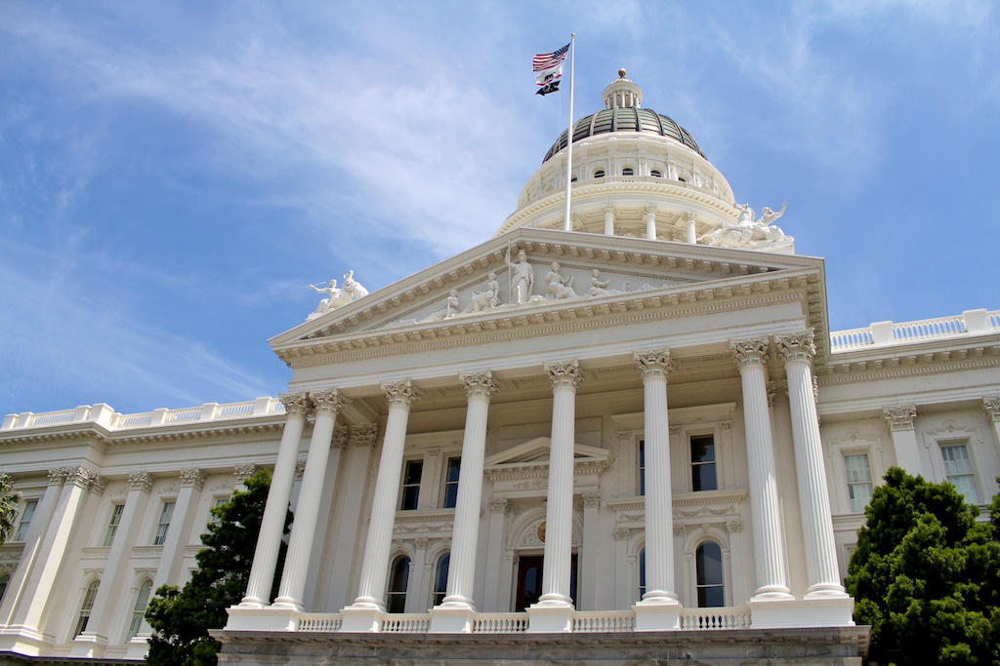

California uses a top-two primary. Every name sits on one ballot. The first two advance, party be damned. On June 2, 2026, that produced a Democrat and a Republican, which is the ordinary California result and not the nightmare some Democrats spent April fearing.
Xavier Becerra finished first with about 28 percent. Steve Hilton finished second with about 25 percent. Tom Steyer, who spent more than $200 million of his own money, finished third. Riverside County Sheriff Chad Bianco was the only other name in double digits.
The general election is November 3. Outgoing Governor Gavin Newsom is term-limited. He has endorsed Becerra.
The numbers that do not campaign
Primary
28 / 25
Becerra then Hilton. Neither had a majority. That is normal in a 60-name field.
Registration
~45 / ~25
Democrat to Republican among registered voters. The rest are no-party and minor.
August polls
55–37 · 49–41
Berkeley IGS / L.A. Times among likely voters. Wolfson poll, Hilton-sponsored, among registered voters. Same month. Different spread.
San Joaquin Valley
38 / 57
Becerra / Hilton in the August IGS regional cut. The Valley is not the Bay Area. Fresno lives in that cut.
A poll is a snapshot, not a statute. Two snapshots in August already disagree on the size of the lead. The registration math does not disagree.
Two origin stories that rhyme
Both men sell a working-class immigrant childhood. That is not invented. It is also not a policy.

Becerra is 68. Parents from Mexico. Raised in Sacramento, son of a construction worker. First in the family through Stanford, undergraduate and law. Assembly, then 24 years in the House, including chair of the House Democratic Caucus. Jerry Brown appointed him attorney general in 2017. He sued the first Trump administration on the order of 120 times. Biden made him Health and Human Services secretary. If he wins he would be the first Latino governor of California since 1875.
The resume is long. That is the point of his campaign and the point of Hilton's attack. Hilton calls him a career politician who would deliver more of the same. Becerra calls himself a crisis manager who already ran large systems.
His HHS tenure is not a blank page. Supporters credit drug-price negotiation under Medicare and ACA subsidy expansion. Critics, including reporting in the New York Times, documented scaled-back vetting of unaccompanied migrant children and later labor exploitation. A separate primary-season fraud case involved former campaign advisers siphoning money. Becerra was not charged. The guilty pleas exist on the record anyway.
Hilton is 57. Born in London to Hungarian refugee parents. Oxford. Senior adviser to British Prime Minister David Cameron. Moved to California in 2012. Co-founded Crowdpac, then left it. Hosted Fox News The Next Revolution from 2017 to 2023. Became a U.S. citizen in 2021. Lives in Atherton. President Trump endorsed him in the primary. Hilton called the endorsement an honor and has also spent the general trying to talk to independents and Latinos who do not like that name.
He has never held elected office in California. That is the point of his campaign and the point of Becerra's attack. Hilton sells outsider change. Becerra sells experience against a man whose last large job was a television hour.

What each man says he will do
Slogans travel. Delivery does not. A Republican governor in 2027 still faces a Democratic Legislature. That fact belongs next to every Hilton promise. A Democratic governor still faces a budget hole, CEQA, city councils, and the same housing math Newsom did not finish. That fact belongs next to every Becerra promise.
Cost of living and energy
| Item | Becerra | Hilton |
|---|---|---|
| Gas | Stand up to gouging. Regulatory pressure on prices. Has blamed federal tariffs and foreign conflict for spikes. | $3 a gallon. Suspend the Low Carbon Fuel Standard. More in-state oil and refinery capacity. Cut fuel fees. |
| Power bills | Freeze or cap unjustified rate hikes. Talked about a limited free "power hour" for low-income households. Has also signaled he will not bankrupt working families for climate targets. | Cut bills by half, by his count, by repealing climate mandates on electricity and breaking up PG&E's monopoly. |
| Income tax | No comparable across-the-board exemption. Relief framed as childcare help, drug prices, and state power against gouging. | No tax on the first $150,000 of income. Paid for, he says, by $25 billion in cuts including a 10 percent state workforce reduction and ending high-speed rail. |
$3 gas is a number you can pump against. A 10 percent workforce cut is a number the Legislature can refuse. Both belong on the same page.
Housing
| Item | Becerra | Hilton |
|---|---|---|
| Supply | Declare a housing emergency. 90-day permit clocks. Unstick already-approved affordable units. Push cities that stall. Endorse housing bonds and down-payment aid. Limit investor purchases of single-family homes. | Build outward, not only upward. Fast-track 1,000-square-foot starter homes. Cut fees. Moratorium on new housing rules. Limit CEQA lawsuits. End what he calls a bias against single-family houses. |
| Rent control | Keep tenant protections. Limit evictions. | Restructure or eliminate rent control on the claim that it stops builders. |
Encampments, the street, and the statute
This is the part that lands on Olive, Belmont, and the alley behind the porch. California holds about a quarter of the nation's homeless population and the highest unsheltered rate. The state has spent billions. The sidewalks did not become quieter in proportion to the invoices.
Becerra keeps Housing First as the frame, paired with treatment "where needed." He has proposed a $150 million annual prevention fund for rent and foreclosure. He says expand emergency shelter so people can leave the street. He says people should not be allowed to stay outside when shelter is offered, then stops short of arrest as the tool. The verb is offer. The enforcement edge is blunt.
Hilton calls Housing First a disaster. He would repeal the state Housing First mandate, ban public camping, clear encampments first, then triage into sober congregate housing and treatment. He has said local governments get about three months. After that he would send state law enforcement. He wants Proposition 36 enforced on repeat drug and theft cases. The verb is clear. The treatment edge is the second sentence, not the first.
Caltrans already publishes its own count: tens of thousands of highway encampments removed since 2021, including SAFE task-force work that has listed Fresno among the cities. Clearing is not a new invention. Whether clearing without a cheap, sober bed behind it is compassion or theater is the actual argument. Both campaigns use the word compassion. They do not mean the same machine.
Healthcare and who is in the system
Becerra runs as the healthcare governor. CalRx generics, telehealth, community prevention, keep and expand coverage, including a willingness to reverse the freeze on Medi-Cal enrollment for undocumented residents on the claim that prevention is cheaper than the emergency room.
Hilton would end what he calls free healthcare for citizens of other countries "who shouldn't even be here." He talks competition among insurers and less consolidation. The contrast is not subtle. It is also a federal-and-state tangle a governor does not fully own.
What the structure will do regardless of the ad
Three facts sit under both campaigns.
One. California has not elected a Republican governor since Arnold Schwarzenegger's 2006 re-elect. Party registration has not flipped since then. A Trump endorsement that helped Hilton finish second in June is the same endorsement that polls as a drag in November among the larger half of the state.
Two. A governor does not write most of the budget alone. Hilton's $3 gas, $150,000 exemption, and workforce cut all require a Legislature that did not campaign on them. Becerra's emergency declarations and rate freezes run into courts, agencies, and utilities that already know how to wait a governor out.
Three. The San Joaquin Valley is not a rounding error. In the August IGS regional table, Hilton led the Valley 57 to 38 while Becerra led Los Angeles County 60 to 31 and the Bay Area 69 to 24. Fresno sits inside that split. Statewide math can bury a Valley preference. It does not erase it on the street that has to buy the gallon and walk the block.
How to read the choice without a team shirt
Becerra is continuity with a new last name and a claim that experience can squeeze prices where markets failed. Hilton is rupture with a television cadence and a claim that the last sixteen years of one-party rule are the cause, not the weather.
If you want the state to keep Housing First, keep the climate-rule stack, keep the lawsuit posture toward a Republican White House, and treat encampments primarily as a housing-and-services problem, Becerra is the instrument on the ballot. That is a description, not a hymn.
If you want camping treated as illegal, Housing First repealed, CEQA narrowed, fuel rules suspended, and a tax floor at $150,000, Hilton is the instrument on the ballot. That is a description, not a hymn. Whether the instrument can play those notes through a Democratic Legislature is a separate question he has not solved in public with votes, because he has not had any.
The High Tower District does not need another slogan. It needs the statute used or the statute rewritten in the open. Gas is a number. An alley is a place. A poll is a picture of last week. November 3 is the only date that turns any of this into a governor.
Sources
- Associated Press, June 9, 2026. Primary call: Becerra and Hilton advance.
- New York Times, Laurel Rosenhall, June 9, 2026. Hilton beats Steyer for second spot.
- Ballotpedia, California gubernatorial election 2026. Certified primary shares: Becerra 28.0%, Hilton 24.6%, Steyer 22.8%.
- Berkeley IGS / Los Angeles Times poll, Aug. 3–9, 2026. Likely voters: Becerra 55, Hilton 37, undecided 7. Regional cut includes San Joaquin Valley 38–57.
- David Wolfson poll, Aug. 14–16, 2026, reported Aug. 24. Registered voters: Becerra 49.2, Hilton 41, undecided 9.8. Hilton campaign sponsor.
- Los Angeles Times voter guide, Nicole Nixon, Aug. 10, 2026. Bios and issue contrast.
- Los Angeles Times, Mehta and Nixon, Aug. 11, 2026. Politico forum in Sacramento.
- Sacramento Bee voter guide, Ben Paviour, Sept. 10, 2026.
- CalMatters 2026 governor guide. Housing and homelessness positions.
- New York Post, May 26, 2026. Hilton first-100-days outline on encampments and Prop. 36.
- Caltrans Housing and Homelessness page, figures current into 2026, including SAFE task force cities listed as including Fresno.
This page is an independent civic comparison. It is not a campaign committee filing and does not endorse a candidate.